DeepSeek Whale Maid Plush Pillows — 14 Designs
A full photo catalogue of the blue whale-girl maid plush: die-cut pillows in navy and cream, printed meme editions, tall body-pillow cuts and a wide desk-scene cushion. Every listing has the exact shape, pose and printed artwork, in English.
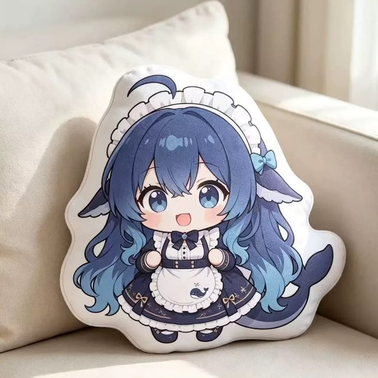
Standing Front View — Whale Maid Plush Pillow
The clean hero shot.
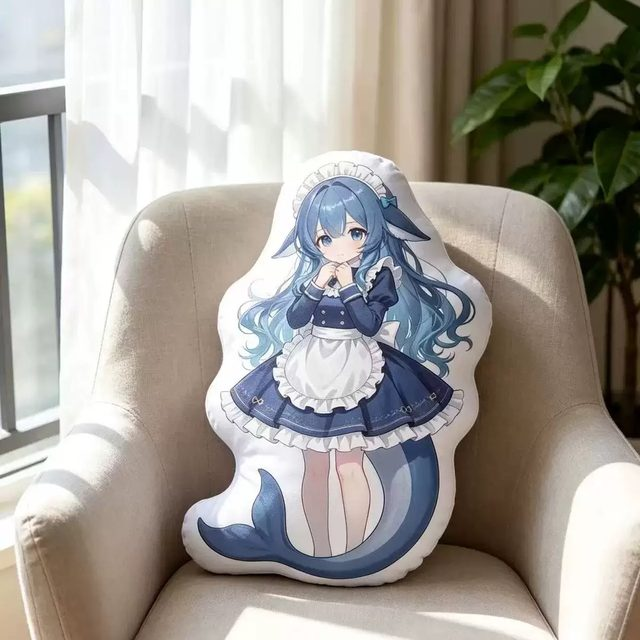
Tall Body Pillow — Whale Maid Long Cushion
The tall cut: a full body-pillow proportion, head to flipper, resting upright in a linen armchair by a window.
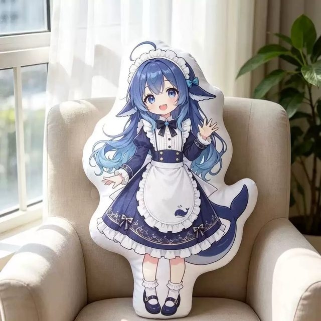
Waving Long Body Pillow
Same body-pillow cut as the tall design, in a greeting pose: one hand up, one hand open, mouth open mid-hello.
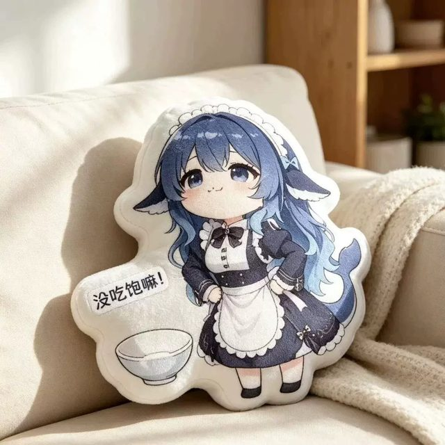
Hungry Rice Bowl Edition
Hands on hips, empty bowl, printed speech bubble — the hungry version.
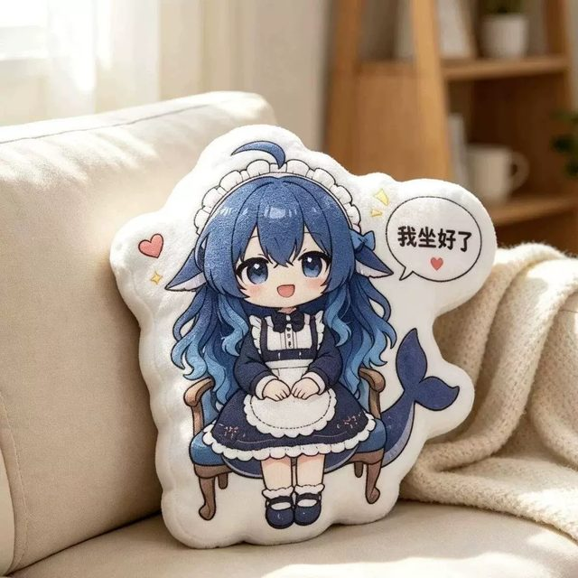
Sitting On A Chair Edition
The seated variant: a tiny wooden chair is part of the silhouette, legs dangling, hands folded in the lap, speech bubble with a heart at the shoulder.
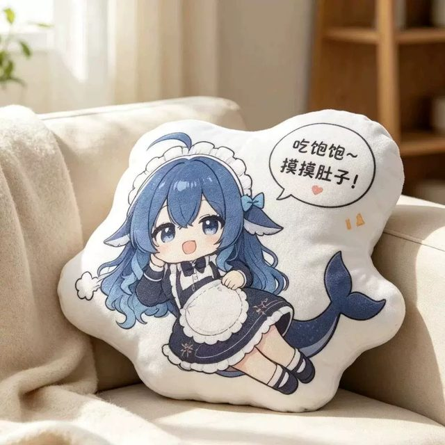
Full Belly Edition
Reclining pose with the legs kicked out and a hand over a full belly.
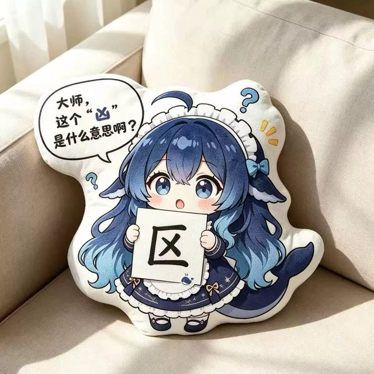
Holding The Sign Edition
She is holding up a card with a single character on it and asking what it means.
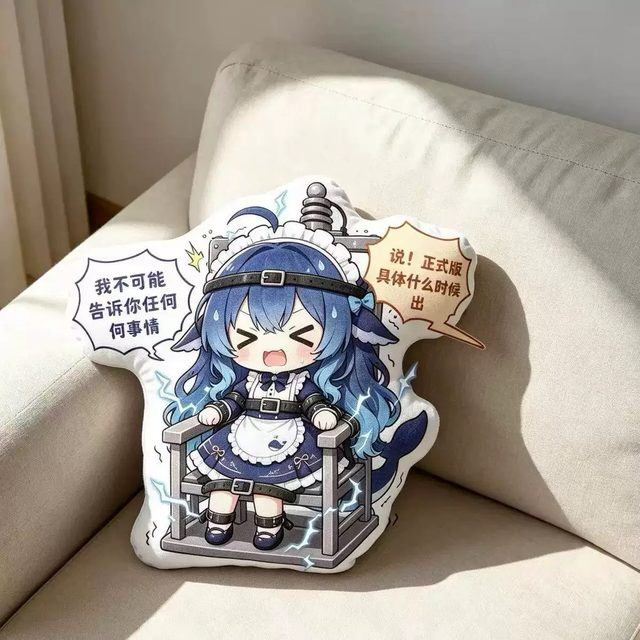
Release Date Interrogation Edition
The interrogation gag: strapped into a tin chair under a coil, one bubble demanding a release date and the other refusing to talk.
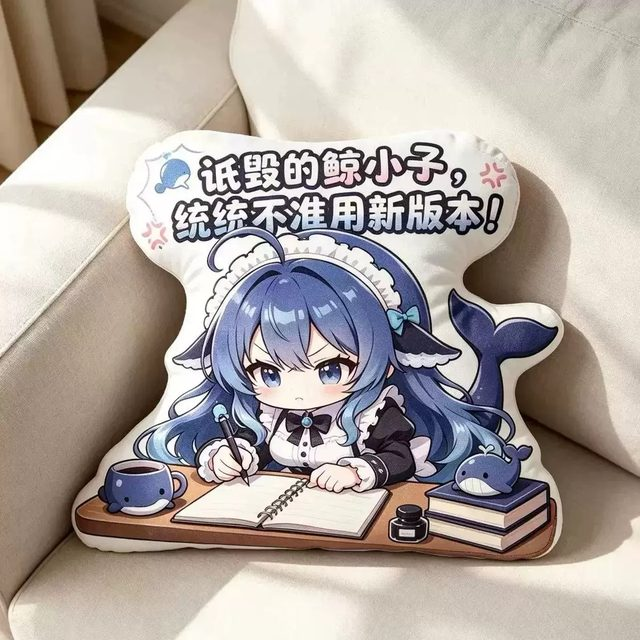
Desk Scene Edition — Notebook And Whale Mug
The widest piece in the catalogue: a full desk scene, notebook, whale mug, ink bottle and book stack all die-cut into one long landscape pillow.
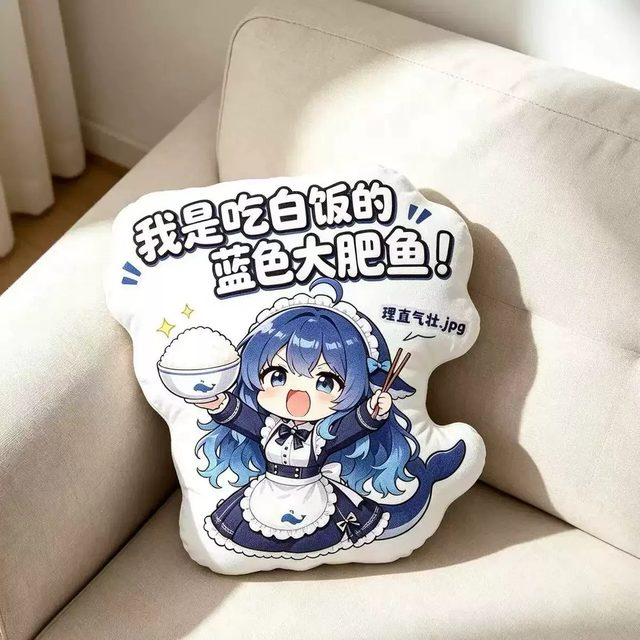
Big Fat Fish Rice Bowl Edition
Bowl in one hand, chopsticks in the other, big printed banner overhead.
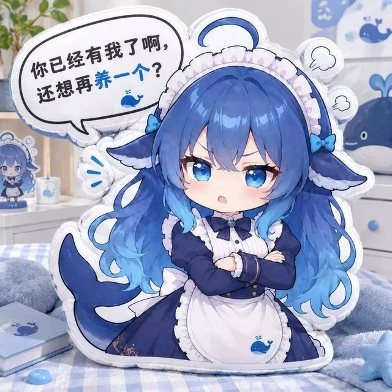
Arms Crossed Edition
Arms crossed, one eyebrow down, speech bubble claiming ownership.
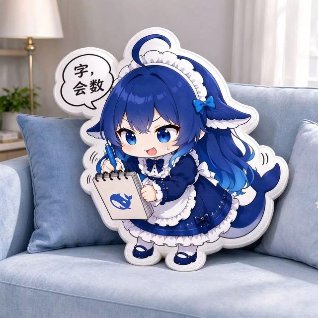
Notepad Edition — Counting Characters
Pen in one hand, whale-branded notepad in the other, small bubble overhead.
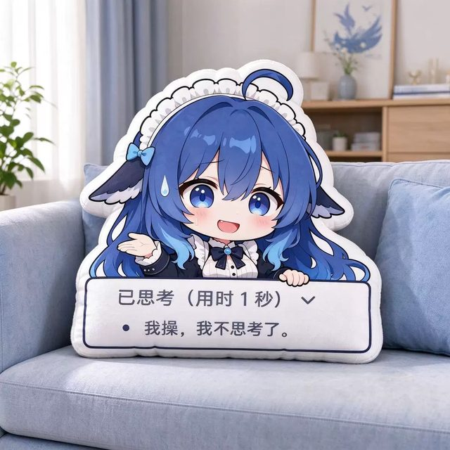
Thinking Panel Meme Edition
The thinking-panel gag: a wide printed sign with the reasoning-panel UI across the front of the pillow, hand raised, sweat drop.
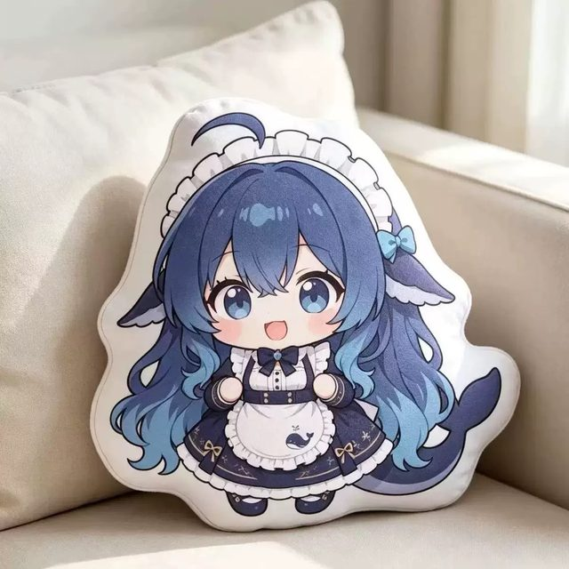
Standing Front View — Alternate Cut
The alternate take on design 01: same character, slightly different arm placement and a cleaner tail curve.
What these plush pillows are
Each piece is a die-cut cushion: the character silhouette — hair, twin tails, whale tail, plus any prop like a chair, bowl or notepad — is cut out of the fabric instead of being printed on a rectangle. Face and outfit are printed by dye sublimation, which is why the gradient blue hair holds detail across a 1200 px photo.
The set splits into three shapes: single-character die-cuts (designs 01, 04, 07, 14) that stand on a desk, tall body-pillow cuts (02, 03) that work as back support, and wide scene cushions (06, 09, 13) that sit flat along the back of a sofa. Designs 05, 08, 11 and 12 are the pose variations with a paper prop or indoor prop built into the outline.
Ordering, sizing and shipping
Sizes, fabric options and per-unit pricing are quoted on request — message @DK88878 on Telegram with the design number (e.g. “design 07”) and your country. Bulk quantities and mixed sets are available.